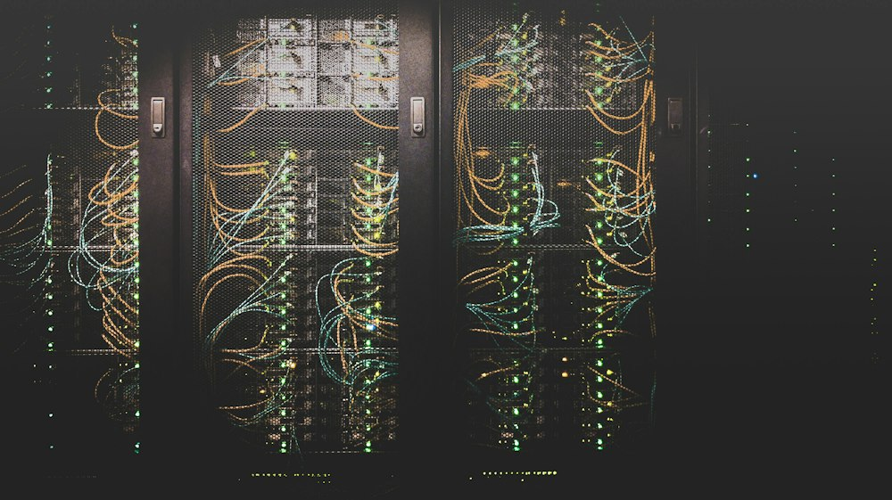
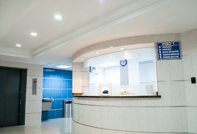

今日重磅 · 封面深度全国一体化算力网迎关键突破：绿电直供比例超八成，中西部算力成本下降24%
随着宁夏中卫、甘肃庆阳、贵州贵安等国家算力枢纽节点完成超高速全光网升级，跨区域算力调度时延已压缩至5毫秒以内。本报记者历时半月实地探访四大枢纽，为您拆解“东数西算”如何真正改写中国制造与人工智能企业的成本账本。

今日重磅 · 封面深度随着宁夏中卫、甘肃庆阳、贵州贵安等国家算力枢纽节点完成超高速全光网升级，跨区域算力调度时延已压缩至5毫秒以内。本报记者历时半月实地探访四大枢纽，为您拆解“东数西算”如何真正改写中国制造与人工智能企业的成本账本。
海关总署最新数据显示，长三角与珠三角高端装备出口保持强劲韧性，其中LNG大型运输船、光伏逆变器及工业机器人出口金额同比分别增长34.2%和21.8%。

在工业制造研发设计环节，国产CAD与CAE流体仿真软件正加速进入主机厂核心研发流程，多家制造业龙头宣布完成全栈国产化工具链切换。

针对职场人群工作日就医不便痛点，北京、上海、广州、成都等地公立医院普遍增设17:30至20:30夜间门诊，检验检查同步开放且纳入医保常规报销。

冷链物流基础设施完善让鲜果与烘焙原料实现县城次日达。报告显示，2026年一季度全国县城现制饮品消费频次同比增长28%，客单价稳定在12至16元区间。
液体可回收火箭试验进展顺利，民营火箭企业与低轨卫星互联网星座组网进入协同爆发期，单星制造成本较三年前下降超过50%。